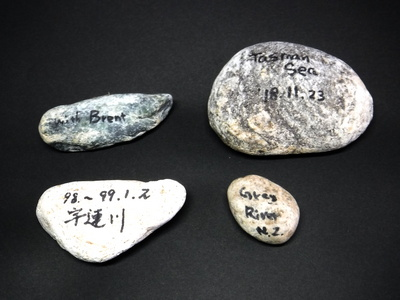
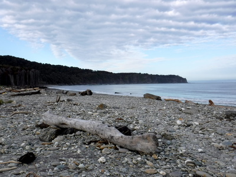

ティップス
魚を掛けてから 小さいけれども、永遠の思い出を拾っておくこと
本棚の隅に、小さな石がいくつか飾ってある。もうかすれかけているマジックの文字は、 with Brent とか、Tasman Sea 18.11.23 などと読める。これらの小石は僕がニュージーランドでの釣行時に、訪れた川や海岸で記念に拾ってきたものである。

Grey River NZ と書いてある淡い茶色の小石は、1997年の初めてのニュージーランド釣行で、その旅の３人目のガイドさんとして案内してくれたブリントさんが連れて行ってくれた川で拾ったものだ。
最初の２泊３日間はヘリで飛んで山奥の源流に入り、キャンプをしながら釣ったものの、痛恨のボウズを喰らい、失意のうちにブリントさんと出会ったのだった。
４日目からは彼と大河を延々と遡行し、何尾かの素晴らしい大物ブラウンとのファイトを堪能することができた。その時、河原からそっと１つ拾い、ポケットに入れてはるばる日本まで持ち帰ったのだった。
翌1998年、僕は友人の川本君を誘い、再びブリントさんにガイドしてもらって南島西海岸の最奥の川へ向かった。その年もヘリで飛んでキャンプしたが、またしても、２人してボウズを喰らうはめになった。まぁ、天候も悪かったが、腕はそれ以上に未熟だった。
キャンプを撤収し、迎えのヘリを待つ間、拾ったのが、with Brent と書かれた青灰色の小石である。
翌1999年、僕はニュージーランド留学を決めて渡航し、2002年の暮れに帰国した。そして2010年には友人の鰐部さんと２人で念願の南島西海岸への釣行が実現した。さらに、2018年、ディーン君と訪れたタスマン海の海岸でウェーダーとシューズを洗い、ディディーモを落とした時に拾ったのが、１番大きな Tasman Sea 18.11.23 と書かれた石である。

川原や海辺の小石をお土産、というか自分の記念として持ち帰ることは、いつだったか、ブリントさんが教えてくれたのだった。確か99年のクリスマスにホキティカを訪問してお世話になった時だったように思う。
釣り上げた鱒は持ち帰らないけれど、拾った河原の小石を眺めていると永遠の思い出となる.....と彼は言った。
僕はこれらの小石を、釣りに行きたくて行けない夜更けにじっと見つめることがある。それぞれの川、それぞれの魚たちの思い出のあれこれがまざまざと甦って来る。
大きなやつをあちこちで拾うと、デイパックがとんでもなく重くなるので、できるだけ小さな石を拾うことが秘訣ですね。（笑）
ティップス 目次へ
サイトマップ
ホームへ
お問い合わせ